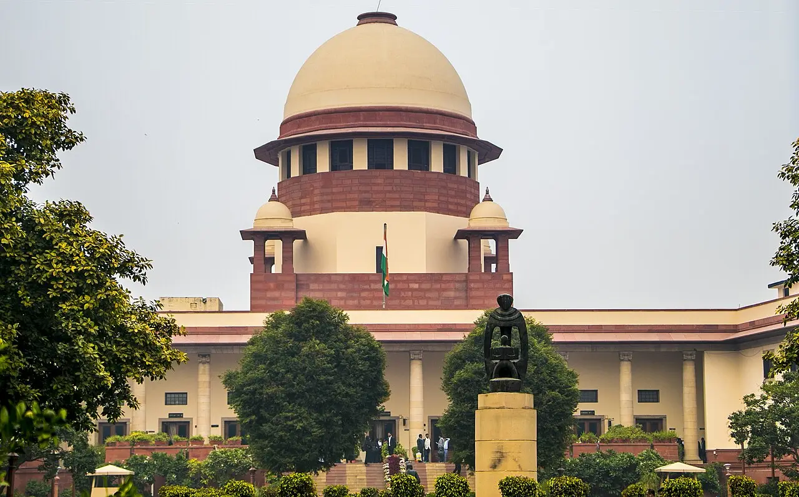
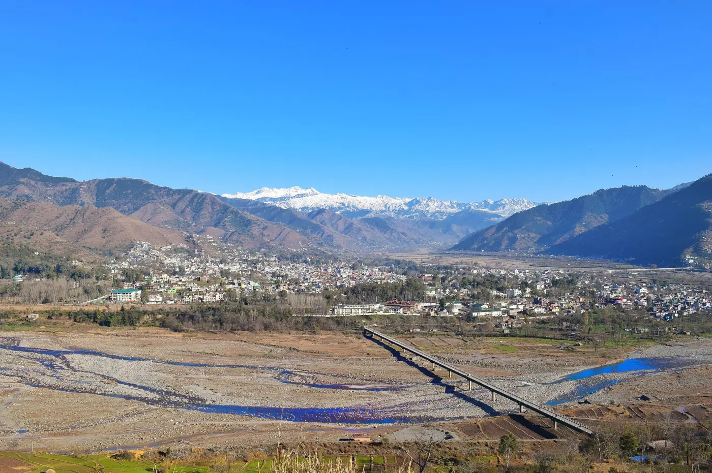

Preventive detention in Jammu & Kashmir: what the courts are finding
On 30 Oct the High Court quashed a Pulwama man's PSA detention, saying alleged use of an encrypted app was no adequate ground; on 3 Nov Ladakh told Wangchuk's school to halt classes.
J&K's High Court keeps quashing preventive detentions under the Public Safety Act, citing unexplained delays and vague police reports.
Kashmir Observer · The WirePreventive detention skips an ordinary trial; activist Khurram Parvez was held nearly five years before the Supreme Court upheld his bail.
The Wire · LiveLawParvez and journalist Irfan Mehraj face trial in Delhi on bail; the administration says its zero-tolerance policy will continue.
Al Jazeera · Kashmir Observer File photo · 2016
File photo · 2016i
.jpg){kind=link}
The background
The High Court keeps striking down PSA detentions, citing delays and vague police reports.
More detail and sources
Preventive detention lets the authorities hold a person without an ordinary criminal trial. In Jammu and Kashmir the main law is the Public Safety Act (PSA): a district magistrate orders the detention, usually on police reports. In October 2026 the High Court of J&K and Ladakh stressed that such powers must be used "with exceptional caution and strict adherence to constitutional safeguards", and it has been quashing detention orders it found poorly grounded, citing unexplained delays and vague or contradictory police reports. The Wire · Kashmir Observer

File photo · 2019i

Khurram Parvez was held for nearly five years before the Supreme Court upheld his bail.
More detail and sources
Some cases run for years. Kashmiri rights activist Khurram Parvez was arrested in November 2021 and journalist Irfan Mehraj in 2023, both under the anti-terror law UAPA in a case brought by the National Investigation Agency (NIA). They were freed on bail from a Delhi jail on 22 July 2026; their bail conditions bar them from travelling to Kashmir while they face trial in Delhi. On 30 October 2026 the Supreme Court dismissed the NIA's challenge to Parvez's bail, citing his long incarceration. Al Jazeera · LiveLaw
More than 80 government employees have been dismissed without inquiry since 2019.
More detail and sources
Government jobs are another front. Since 2019 the Lieutenant Governor has used special powers under Article 311 of the Constitution to dismiss more than 80 employees without any departmental inquiry, over alleged links to militancy or separatism, The Hindu reports. In September 2026 the elected government used Article 311 for the first time, to dismiss a teacher accused of raping a student. The Hindu

File photo · 2020i

In Poonch, a censure over three custodial deaths was struck from an officer's record.
More detail and sources
In Poonch, near the Line of Control, accountability for civilian deaths is contested. Three civilians died in December 2023 from injuries allegedly received during army interrogation; a senior officer was censured with two years of "severe displeasure". In August 2026 the Armed Forces Tribunal ordered that the action be struck from his record, angering Gujjar community leaders. On 12 October 2026 four cousins were killed by a landmine at the Line of Control: Indian security sources called them infiltrating militants, while relatives across the line say they were civilians repairing a water pipe. The Hindu · Kashmir Times
 File photo · 2015
File photo · 2015i
.jpg){kind=link}
Four people died in police firing in Leh in 2025; the inquiry report has not been released.
More detail and sources
In Ladakh, four people were killed in police firing during protests on 24 September 2025, and 81 people were arrested afterwards. Climate activist Sonam Wangchuk was held under the National Security Act for nearly six months until the order was revoked on 14 March 2026. A year on, he is asking for the judicial inquiry report to be released, a review of cases against protesters and higher compensation for the victims' families. Outlook
Timeline
Newest first. Every update links to its sources.
- Latest
On 3 November the Ladakh administration told Sonam Wangchuk's Himalayan Institute of Alternatives to maintain status quo and not run classes at its Desert Flower School in Phyang while the High Court hears its challenge to the August 2025 cancellation of its land lease. The administration says lease conditions were not met. Indian Express · Scroll
Show 5 earlier updates ↓
On 1 November stones were thrown at a newly opened mosque in Pehroo Sherbagh, Anantnag, during evening prayers, damaging the building and injuring some worshippers, officials said, amid objections from some residents to prayers there. Police registered an FIR, detained four people for questioning and appealed to people not to give the incident a communal colour. Kashmir Observer
On 31 October the High Court quashed the PSA detention of Umer Hamid Sheikh of Srinagar, ordered on 2 June 2025, and directed his release. It said the unexplained 25-day delay after police sought his detention showed there was "no urgency", and found the police reports relied on vague and contradictory. An earlier PSA order against him, from 2021, had also been quashed in 2023. Kashmir Observer
On 30 October Justice Wasim Sadiq Nargal quashed the PSA detention of Ajaz Ahmad Seh, 26, of Pulwama, held since 28 July 2025. The police dossier alleged contact with Jaish-e-Mohammad handlers through the encrypted app Zangi over a VPN; the court said such assertions, without particulars of dates or content, were not "an adequate basis for curtailing personal liberty", and flagged the mechanical reproduction of the police dossier. Indian Express
On 30 October the Supreme Court dismissed the NIA's challenge to the bail of Khurram Parvez in the UAPA terror-funding case, citing his long incarceration since his arrest in November 2021. LiveLaw
On 22 October the Deputy Commissioner of Srinagar appeared in person before the High Court, after Justice Wasim Sadiq Nargal asked him to explain a PSA detention order the judge had prima facie described as passed "recklessly and mechanically", without due application of mind. The Wire
- Lieutenant Governor Manoj Sinha: "We did not buy peace, we established peace" through a zero-tolerance policy.
- He says more than 780 militants have been killed since 2020, local recruitment has ended and stone-pelting has been eradicated.
- In the Pulwama case, police alleged contact with Jaish-e-Mohammad handlers; Ladakh's administration says Wangchuk's institute broke its lease conditions. Indian Express · Indian Express
Show 3 more
- The NIA challenged Khurram Parvez's bail in what it calls a terror-funding case; the Supreme Court dismissed its plea.
- The army censured a senior officer over the 2023 Poonch custodial deaths; the Armed Forces Tribunal later struck the censure from his record.
- Indian security sources say the four men killed at the Line of Control on 12 October were infiltrating militants.
In the daily edition: Wed 04 Nov · Sat 31 Oct